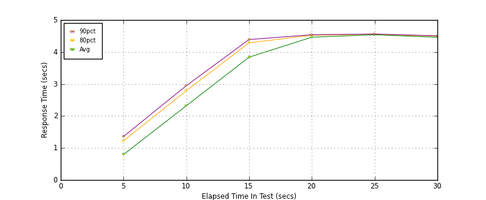
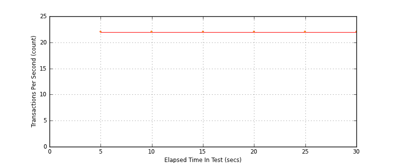
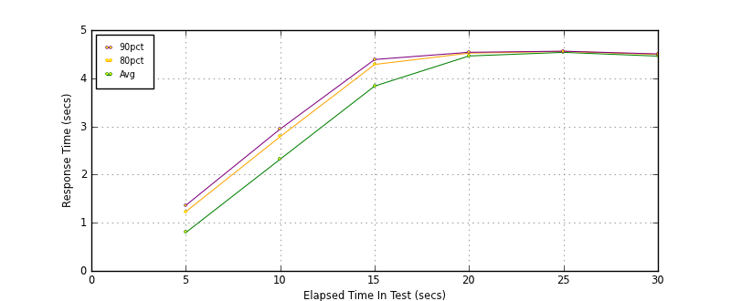
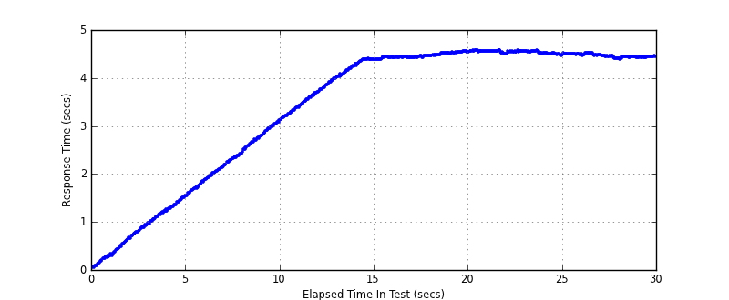

Performance Results Report
Summary
transactions: 768
errors: 0
run time: 30 secs
rampup: 10 secs
test start: 2014-01-15 15:43:32
test finish: 2014-01-15 15:44:01
time-series interval: 5 secs
workload configuration:
| group name | threads | script name |
|---|
| user_group-1 | 100 | read_user.py |
All Transactions
Transaction Response Summary (secs)
| count | min | avg | 80pct | 90pct | 95pct | max | stdev |
|---|
| 768 | 0.052 | 3.403 | 4.508 | 4.545 | 4.555 | 4.583 | 1.428 |
Interval Details (secs)
| interval | count | rate | min | avg | 80pct | 90pct | 95pct | max | stdev |
|---|
| 1 | 111 | 22.20 | 0.052 | 0.796 | 1.230 | 1.361 | 1.463 | 1.550 | 0.444 |
| 2 | 111 | 22.20 | 1.549 | 2.320 | 2.788 | 2.947 | 3.038 | 3.115 | 0.455 |
| 3 | 114 | 22.80 | 3.129 | 3.838 | 4.287 | 4.390 | 4.392 | 4.401 | 0.403 |
| 4 | 110 | 22.00 | 4.384 | 4.463 | 4.522 | 4.539 | 4.542 | 4.555 | 0.048 |
| 5 | 111 | 22.20 | 4.466 | 4.538 | 4.558 | 4.562 | 4.573 | 4.583 | 0.026 |
| 6 | 111 | 22.20 | 4.393 | 4.460 | 4.496 | 4.506 | 4.515 | 4.523 | 0.033 |
Graphs
Response Time: 5 sec time-series

Response Time: raw data (all points)
Throughput: 5 sec time-series

Custom Timer: get_tweets
Timer Summary (secs)
| count | min | avg | 80pct | 90pct | 95pct | max | stdev |
|---|
| 668 | 0.052 | 3.403 | 4.508 | 4.545 | 4.554 | 4.583 | 1.428 |
Interval Details (secs)
| interval | count | rate | min | avg | 80pct | 90pct | 95pct | max | stdev |
|---|
| 1 | 111 | 22.20 | 0.052 | 0.796 | 1.229 | 1.361 | 1.463 | 1.550 | 0.444 |
| 2 | 111 | 22.20 | 1.549 | 2.320 | 2.788 | 2.947 | 3.038 | 3.114 | 0.455 |
| 3 | 114 | 22.80 | 3.129 | 3.838 | 4.286 | 4.390 | 4.392 | 4.400 | 0.403 |
| 4 | 110 | 22.00 | 4.384 | 4.463 | 4.522 | 4.539 | 4.542 | 4.555 | 0.048 |
| 5 | 111 | 22.20 | 4.466 | 4.538 | 4.558 | 4.562 | 4.572 | 4.583 | 0.026 |
| 6 | 111 | 22.20 | 4.393 | 4.460 | 4.495 | 4.506 | 4.514 | 4.522 | 0.033 |
Graphs
Response Time: 5 sec time-series

Response Time: raw data (all points)

Throughput: 5 sec time-series